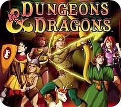
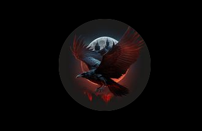

Para alguns, Bruno Crau, que tem como nome completo The Only One Bloody Crow, é uma entidade virtual que aparece em transmissões dentro da plataforma de stream mais conhecida como Twitch.
Crow, para os mais íntimos Bruno Crau, é uma figura minimamente curiosa, pois ele possui um comportamento de aparecer e desaparecer sem nenhum aviso prévio. A sua existência é marcada por pequenos comentários precisos nos chats das transmissões. Ele aparece por um breve momento e depois desaparece, parecido com o Mestre dos Magos do desenho Caverna do Dragão.
Diante sua série de surgimentos e desaparecimentos, Crow tem um comportamento bem claro de ser uma espécie de mago. Que tipo de mago? Ninguém sabe dizer! seu comportamento é completamente inconsistente, não só por conta de sua presença completamente imprevisível, mas sim por conta de suas vontades, que é algo a ser debatido, pois nunca sabemos o que se passa na cabeça de Crow com relação as suas ações e gostos. Além disso, sua imagem é completamente inigmática, só sabemos que ele possui um amor platônico por corvos.
Absolutamente NADA. Como já foi dito anteriormente, Crow é uma figura inigmática, ao ponto de não termos noção de sua aparência, só sabemos de sua existência por conta de suas aparições na twtich. Suas redes sociais são completamente ocultas para meros mortais que desejam saber um pouco mais sobre ele. A única coisa que foi vista sobre Bruno Crau foi uma possível foto de perfil de seu instagram.

Essa foi a única imagem que foi registrada sobre alguma coisa a mais da internet sobre Bruno Crau. Tirando isso não sabemos de mais nada sobre essa entidade desconhecida.
Crow possui a mania de contrariar algumas pessoas com o intuito de se divertir.
O ciclo de sono de Crow é completamente diferente a de um humano normal, deixando a dúvida se ele é humano ou não.
Crow volta e meia mostra ter uma riqueza inigualável, fazendo mega doações, e deixando uma dúvida sobre o quão rico ele é.
Já foi dito uma vez que Crow come algo completamente fora da realidade humana, que é popoca, uma espécie de grão macio.
Quando Crow joga dont starv, ele tem mania de jogar praga em seus aliados, além de digitar palavras desconhecidas como bocoió, papaia, watatatata, wadada, salguadim papaia dentre outras coisas fora de compreensão.